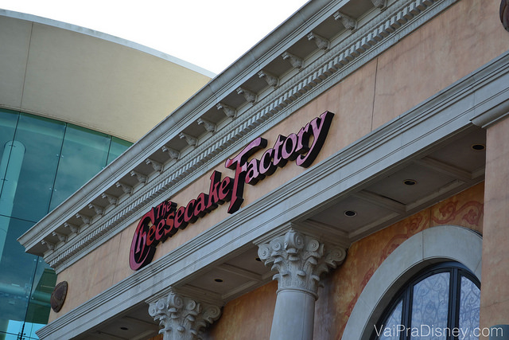
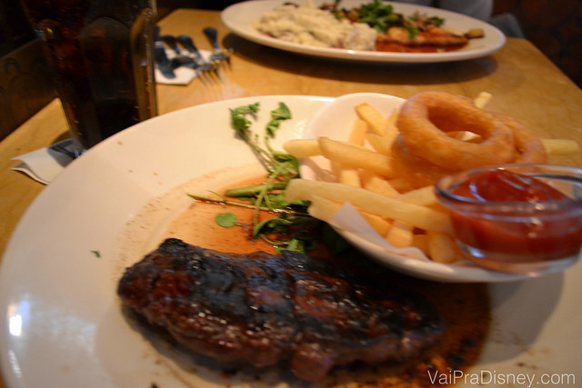

Restaurantes Recomendados

Cheesecake Factory: comendo muito bem em Orlando
Eu e o Felipe sempre gostamos de comer bem na viagem e hoje vou falar de um restaurante que não pode faltar na nossa programação em Orlando, a Cheesecake Factory. Este restaurante que é queridinho tanto dos brasileiros como dos americanos, é um dos nossos preferidos em Orlando e não é à que gostamos de comer bem sempre. Hoje vou contar um pouquinho sobre a Cheesecake Factory, um dos nossos restaurantes preferidos em Orlando. Em uma de nossas últimas viagens fomos lá e estava tão bom que voltamos…4 vezes! A gente simplesmente não conseguia evitar e acabava voltando sempre. O sucesso com os brasileiros é tanto que a rede está planejando abrir uma unidade em São Paulo em 2015. Estou torcendo muito mas enquanto isso não acontece, a gente te apresenta a unidade de Orlando mesmo.
Um dos meus cheesecakes favoritos, com maçã e caramelo!
A atmosfera da Cheesecake Factory
A Cheesecake Factory é uma rede de restaurantes super conhecida nos Estados Unidos e está presente praticamente no país inteiro. Como eu falei, o restaurante é super popular entre locais e turistas. O ambiente é bem despojado, não é preciso se preocupar muito com vestimenta ou nada disso, é um restaurante simples e descomplicado. Acho legal que a Cheesecake Factory é super versátil, sendo uma boa opção para praticamente qualquer viajante: você pode estar sozinho, em casal, com os amigos ou com a família, em todos os casos a Cheesecake Factory é uma ótima programação para a viagem. Este clima versátil cria um ambiente bem confortável e aconchegante, que de alguma forma me lembra o estilão do outback, sabe? A unidade da Cheesecake Factory em Orlando fica dentro do Mall at Millenia, ou seja, é uma opção ótima para ir antes, durante ou depois das compras. É melhor ser um programa depois das compras, porque você não vai querer experimentar roupas empanturrada de cheesecake, né? Eu pelo menos prefiro fazer as compras antes.

O restaurante é bem grande, conseguindo sentar muitas pessoas de uma vez só. Ainda assim, dada a popularidade, em muitos dias da semana há espera nos horários de pico. Se não quiser esperar, busque passar por lá em horários alternativos ou em último caso, visite o Brio, restaurante vizinho que é mais difícil de ter fila. Isso dito, normalmente as filas não são muito demoradas não. Eu raramente espero mais de 20 minutos para sentar. E enquanto espera, você pode pedir algum drink ou petisco na área do bar que é livre de espera. Se você estiver em um grupo pequeno e conseguir uma mesinha ou espaço no balcão na área do bar, pode até optar por desistir da fila e pedir seus pratos lá mesmo. Fica a seu critério.
Ah! E para quem vai viajar com o smartphone mas não quer pagar plano de dados para usar a internet, de muitos pontos da Cheesecake Factory é possível “roubar” o sinal de wifi do restaurante do lado, o The Capital Grille. Fica a dica.
A comida da Cheesecake Factory
O cardápio da Cheesecake Factory é super variado, aliás, é o mais variado do país inteiro. Sim, eles possuem o maior cardápio dos Estados Unidos, ou seja, é praticamente impossível não ter uma opção que você goste. Para os mais curiosos, vocês podem olhar o cardápio clicando aqui.
O cardápio parece um livro, de tão grande que é. Prepare-se para ficar na dúvida, pois você vai ter que escolher uma entre muitas opções excelentes!
A rede é famosa pelos seus cheesecakes dos sabores mais variados, indo do tradicional com calda de morango ao de doce de leite, de chocolate, de maçã…a variedade é imensa! Eu nunca comi um cheesecake ruim, mas acho que o melhor de todos é o de doce de leite. Não, é o de maçã. Ou é o de doce de leite? É, não sei.
Outra boa pedida: cheesecake Red Velvet!
Mas nem só de cheesecake vive um restaurante e todo o cardápio da Cheesecake Factory é excelente, começando pelo pãozinho do couvert até a sobremesa, pode ir tranquilo que você vai comer bem. O cardápio hiper variado tem opções de massas, carnes, peixes, sanduíches, pizzas e tudo é super gostoso. Eu adoro as massas, principalmente a carbonara. Quem gosta de camarão também elogia muito o prato de camarões com macarrão cabelo de anjo. É tudo bem temperado, no estilo americano, mas tudo é feito no maior capricho e por um preço super justo. Vale dizer que as porções são bem grandes. Se você for no almoço, eles oferecem uma opção um pouco menor (com preço também menor, claro) que pode valer a pena. Se pedir o prato no tamanho normal, dependendo da sua fome é possível dividir. Para saber se faz sentido dividir ou não, basta ficar de olho nas mesas a sua volta para ver o tamanho dos pratos que estão chegando. Na hora de avaliar se vai dar conta de comer o prato inteiro, não esqueça de “guardar espaço” pro seu cheesecake depois, heim? 
Pão delicioso que chega quentinho na mesa.

Frango com purê de batatas. Super temperadinho e delicioso!
Gostou? Então não deixe de colocar a Cheesecake Factory na sua programação. Tenho certeza que você vai gostar e é bem capaz de querer voltar mais milhares de vezes como a gente faz.
Nome: The Cheesecake Factory
Endereço: 4200 Conroy Rd, Orlando, FL 32839 (Veja no Google Maps)
Telefone: +1 407-226-0333
Referência: Dentro do shopping Mall At Millenia
Preço: US$15-25 por pessoa (novembro/2013)
Horário de Funcionamento: 10am–11:00pm
Cardápio:clique aqui para visualizar o cardápio (em inglês)
Avaliação do VPD: